← 返回阅读库 · 原论文目录
论文讲解阅读文档 · 表征学习 · v173
Object-Centric Learning with Slot Attention[2006.15055]
视频时长 00:09:17；讲解文字 4,246 字符；提取讲解画面 22 张。按视频原顺序阅读，每段文字保留时间戳。
文字来自整段视频的自动语音转写，按自然停顿分段，并与 PPT / 论文页面 / 演示画面对齐。未将讲解压缩为摘要；术语、数字和口述公式请结合画面及原论文核对。 阅读稿已校正规范部分明确术语误识别；原始逐字稿和每处修改记录另行保留。
讲解画面为源视频截图（640×360），不是可编辑 PPT 文件。全片按每秒 2 帧扫描内容变化，逐步展开页保留；连续动画保留代表画面。清晰度受源视频限制。
下载完整资料包 · 含离线 HTML、PDF、Word、全部 PPT 画面和字幕。
原论文与材料
Object-Centric Learning with Slot Attention · 下载完整 PDF（27 页）
按时间阅读
00:00:00–00:00:13 · 画面 001
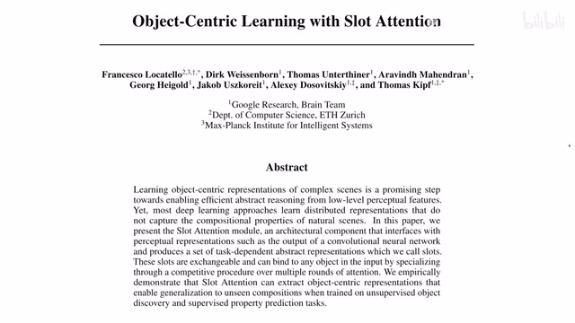
00:00:00–00:00:13 · 画面 001大家好，今天我们来快速说一篇论文，Object-centric learning with slot attention。这篇论文的主要贡献就是介绍一个 slot attention。那么我们具体来看作者的实践，包括为什么要讲这个 Object-centric 这么一个定语。那么在介绍本文之前，我们首先来快速回顾一下这个 DETR，这个我们之前也介绍过了。那么 DETR 里面最核心的创新在于这个 Decoder。
00:00:13–00:00:14 · 画面 002
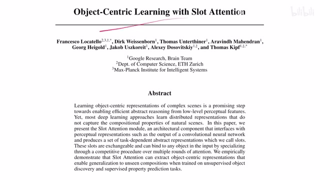
00:00:13–00:00:14 · 画面 00200:00:14–00:00:18 · 画面 003
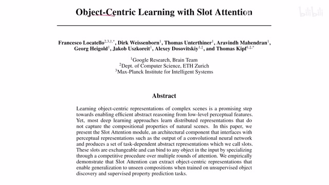
00:00:14–00:00:18 · 画面 00300:00:18–00:00:50 · 画面 004
00:00:18–00:00:50 · 画面 004这里 decoder 的这个输入是 object query 还有从 decoder 过来的这些 t value。那么每个 query 出来之后经过我们 classifier，每个 query 对应一个 object 这样一个结果。然后把这样的一个检测的结果和真实的 ground truth 匹配起来 ，再施加 loss。这个是 DETR 的核心的贡献。那么本文提出的方法。
00:00:50–00:00:51 · 画面 005
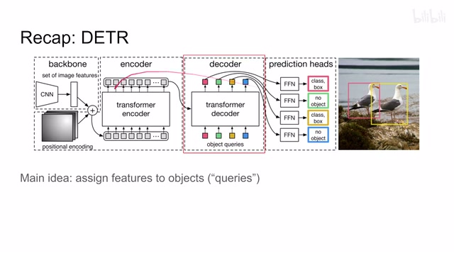
00:00:50–00:00:51 · 画面 00500:00:51–00:00:59 · 画面 006
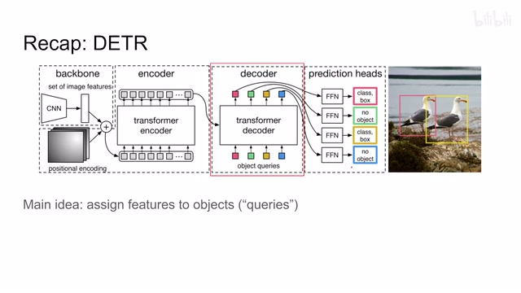
00:00:51–00:00:59 · 画面 006它本质上跟这个 detr 里面这个 decoder 是非常相近的。那么我们具体来看，我们把 detr 里面的这个 object 这个名词呢换成这里本文作者使用的这个 slot。那我直接来看这个方法，假设呢我们现在有这么一个 slot attention 这么一个模块啊，它的输入首先是一堆 features。这里呢它叫做 input，有 n 乘 d 这样一个输入的 feature。那 detr 里面就是 encoder 给我们送来的东西。
00:00:59–00:02:59 · 画面 007
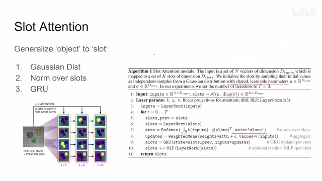
00:00:59–00:02:59 · 画面 007然后呢还有这个 slots，我们之前说了它对应的 DETR 里面的 query，它呢是从一个这个 Gaussian distribution 里面 sample 出来了 K 个 slots，每个 slots 呢它的长度是 D。而这个 D 里面的每一个元素呢是一个独立的高斯分布。然后呢这个高斯分布的这个参数呢还是一个可学的。那么换句话来说呢，你也可以把它理解成这个 slots 是从 VAE 里面的这个 vector 里面这个 sample 出来的。
那么然后呢拿到这个 input 和 slot，我们就开始操作了对吧？首先先是我们设 attention 这个 keyquery 和这个 value 少不了了对不对？按照 transformer 的惯例呢，进来先做一个 layernormalization，这都好说。然后呢有意思的事情发生了，就是这里有一个循环。我们假设先无视这个循环，这个 slot 要做这个 layernormalization，然后呢开始算 attention 吧对吧？
从这个 input 里面出 query，从这个 slot 里面出，然后呢做这个 softmax。但这个 softmax 呢，它是沿着这个 slots 这个轴来做的。也就是说呢，对于每一个这个 feature，对于每一个这个 input 来说，它的这个对于所有的 slot 它的权重是 1。相当于把每一个 feature 呢按照比例分给一个一个的这个 slots。那么这个呢是一个很有意思的操作。
然后计算完这个 attention 之后呢，我们按照刚刚分配好的这个权重，把每一个这个 feature 这个 value 呢给它分到相应的这个 slot 上面。那这里呢做了一个加权的平均。那么得到的是整个这个 attention 机制它的这个输出，这里是 updates。为什么是 updates 呢？因为你看到这里呢做着还维护了一个 gru，它呢相当于用这个 updates 来去更新我们 slot 一开始的这个 vector。
00:02:59–00:03:44 · 画面 008
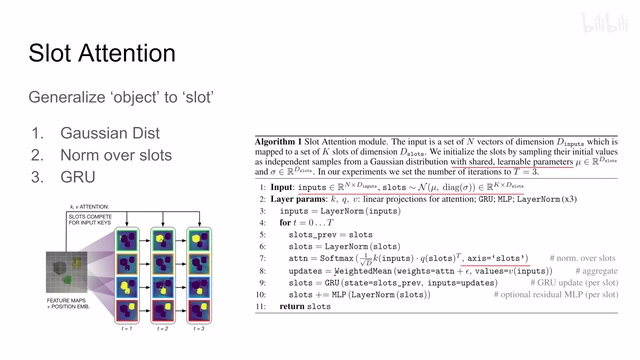
00:02:59–00:03:44 · 画面 008用 GRU 呢去维护一个 slot vector，它的这个进化的过程。那这里呢相当于我们有的这个新的 slot 对吧，更新一下。那么最后科选呢加上一个 residual 的 MLP，就像这个 transformer 里面最后的那层这个 MLP 一样。那整完这个之后，因为我们是有 GRU 嘛，所以这个过程呢它会循环很多次。那这里呢在训练的时候呢做的时候循环三次差不多。
那么这个呢就是本文的这个核心的这个 slot attention 这个 module 这个机制，那么通过这个机制你发现它只返回一个 slot vector，也就像这个 transformer decoder 一样，它最后呢只出来这个 query 里面每个 query 它对应的 feature 的不同，而这个 feature 呢是根据我们这个 input 这个 feature 就是图像里面提取出来的这个 feature 它呢做 attention 这个机制做出来的
00:03:44–00:03:45 · 画面 009
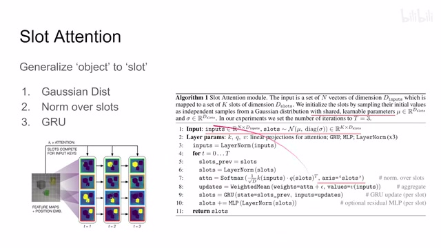
00:03:44–00:03:45 · 画面 00900:03:45–00:03:50 · 画面 010
00:03:45–00:03:50 · 画面 01000:03:50–00:04:08 · 画面 011
00:03:50–00:04:08 · 画面 011所以本质上呢你可以把它理解成这是一个带这个 GRU 的这么一个 Transformer，那么这个呢就是本文最核心的这个贡献。那当然可以看到这里做的有一些 Visualization，这个 Feature Map 就是我们这里说的 Input Visual Embedding 对吧，它提供这个 Key 和 Value，然后呢这里我们分配了这个四个 Slot，可能在第一次循环的时候它们各自表达意义并不是很明显，那么再往后你可以看到
00:04:08–00:04:15 · 画面 012
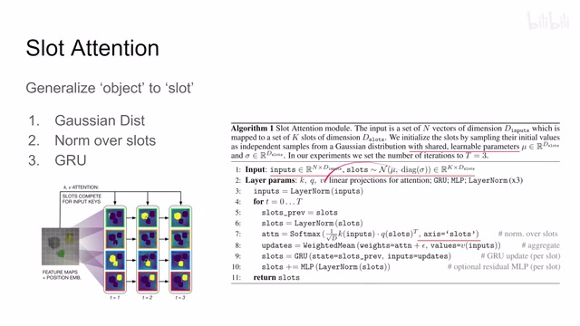
00:04:08–00:04:15 · 画面 01200:04:15–00:04:58 · 画面 013
00:04:15–00:04:58 · 画面 013随着这个循环的不断的继续，他们逐渐的每一个 slot 分配到了不同的这个 object，还有一个分配到这个 background 上面，这是一个看上去还不错的 Visualization。那当然你现在一想，这一个 GRU 弄进来，它本质上和叠了很多层 transformer 然后每层 transformer decoder 它们之间还 share 这个权重，本质上和这个有什么区别呢，有没有本质的区别？那么下面有了这个 slot attention 的机制，我们就要来看作者用了这个机制去做什么事呢
00:04:58–00:06:01 · 画面 014
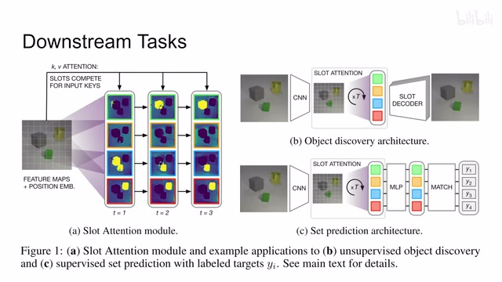
00:04:58–00:06:01 · 画面 014这里呢作者使用了两个这个下游的任务，一个呢是这个 object discovery，这个呢是一个无监督的。那下面这个呢是 set prediction，这个呢就是有监督的。那么这个任务呢就很像这个 DETR 里面做的这个 detection，那么本质上呢这两个任务呢都是想让每一个 slot 这个 vector 去描述一个 object为什么叫 object centric 对吧，因为我们的这个 vector 这个 feature 是最后是跟着每个 object 来走的。那么区别就是上面这个是无监督的啊，我们看整个这样一个机制能不能自己去找到相应的这个 object 那这是一个，那么下面这个呢是有监督的，就是跟 DETR 做 detection 一样，每个 vector 扔到一个 classifier 里面对吧，然后出一个结果跟我们的 Ground Truth 来比较一下，然后呢比较完之后这个 loss 再传回来
那么下面呢我们就来看作者在每一个任务的具体的实现的细节，首先这个 object discovery 它的 encoder 呢用的是这个 CNN base 加上了这个 positional embedding，那么这个配置呢在我们之前的 DETR 里面也见过了，那么经过我们这个 slot attention 呢我们得到这个 slot 每个 slot 呢跟着一个 vector，那在 decoder 阶段呢作者就把每一个 slot 的这个 vector 呢给它 broadcast 成一个这个 2D 的这么一个 representation
00:06:01–00:06:47 · 画面 015
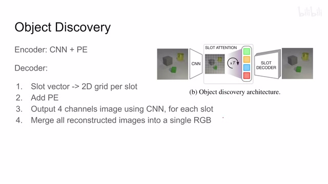
00:06:01–00:06:47 · 画面 015然后呢在这个 representation 上又加了一个 positional embedding，那加完之后呢用这个 CNN 的这个 decoder 去把它变成了一个四通道的这个图像，有什么四通道 RGB 还有一个 alpha 通道，尝试去把这个图像的这个 mask 给它预测出来，然后呢再根据这个 alpha 通道做个 softmax 对吧，把所有的每个 slot 就给它结合起来，最后综合成一张图像，你算这个 reconstruction loss 就可以了，所以呢它是一个无监督的
00:06:47–00:06:48 · 画面 016
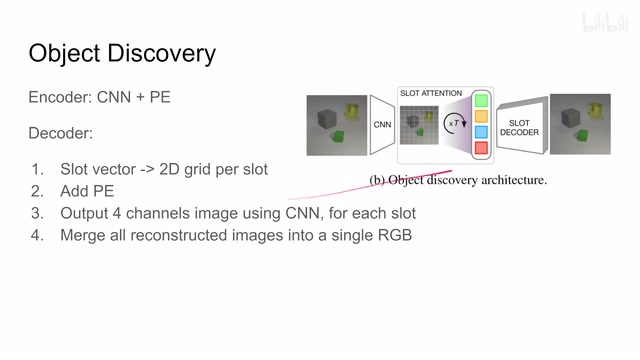
00:06:47–00:06:48 · 画面 01600:06:48–00:06:55 · 画面 017
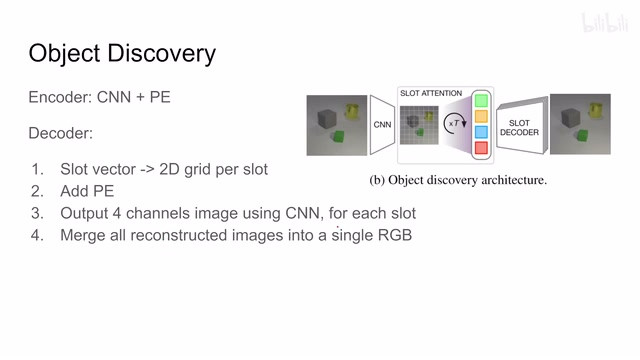
00:06:48–00:06:55 · 画面 01700:06:55–00:07:08 · 画面 018
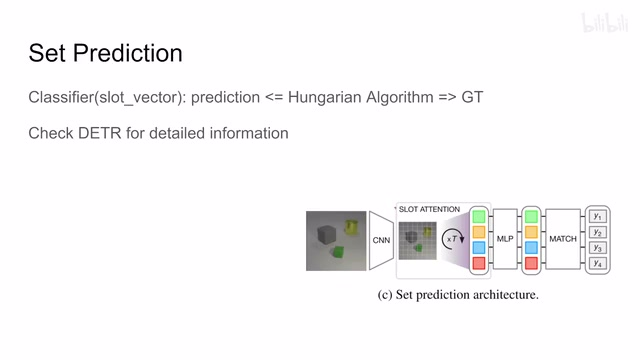
00:06:55–00:07:08 · 画面 018那么 Set Prediction 对吧，就是其实就是一个这个 DETR 里面这个 Detection 这样一个东西，好的。那么以上就是本文的主要的这个技术细节，那么我们来看作者汇报一些结果吧。首先是这个 Unsupervised 这个 Object Discovery，用了一些非常简单的这个数据集，取得了一些不错的数字。这里呢，我们的数据集非常简单，我们有多少个 Object
00:07:08–00:07:52 · 画面 019
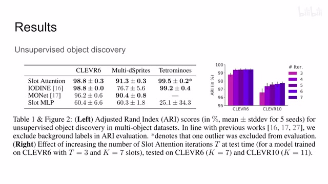
00:07:08–00:07:52 · 画面 019就分配多少个这个 slot 加再加一个 background 这个 slot 那就可以了所以呢这个问题的设置呢是相对比较简单的同时呢还有一个比较有趣的事情就是做着发现我虽然 train 的时候啊我这是 t 等于 3 我 GRU 只跑了三次但是呢我在实际测试的时候呢我可以增加这个 GRU 跑的次数哎他能够给我们带来性能的提升啊挺有意思的这么一个观察那么再往下呢，是这个做了一些 visualization，不同的 slot 它能够抓到不同的 object 对吧，它这个 reconstruction 出来的这个结果还是可以看的。同时呢，随着我们一遍一遍的去走这个 GRU，你可以看到它的这个 reconstruction 这个 decoder 出来的结果呢是越来越好的。那么从这几个非常简单的这个任务来说呢，本文的这个方法呢能够达成它的想要的这个目的。那么接下来这个 setprediction
00:07:52–00:08:17 · 画面 020
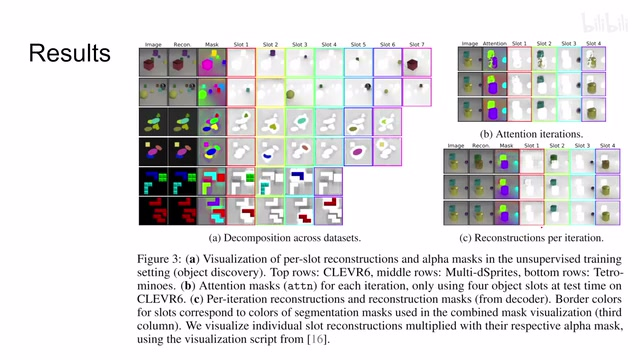
00:07:52–00:08:17 · 画面 02000:08:17–00:09:16 · 画面 021
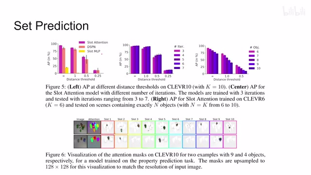
00:08:17–00:09:16 · 画面 021同样的也是一堆美好的数字，作者也是观察到这个随着这个 GRU 的次数的增加对吧，我们的这个性能在增加。但是如果我们的数据集中呢有更多的 object 放下来呢，首先性能有下降，逐渐下降，说明我们的这个 slot 确实和 object 有对应。那么此外呢，作者还在复录中汇报了大量的 ablation各种实验的细节，欢迎感兴趣的朋友呢去查看。那么总的来说，本文提出了一个非常像这个 Transformer Decoder DETR 这么一个 slot attention，那目的呢还是就是针对每一个 object 去 assign 这个 feature，想法是非常好的。但是实验来看呢，只是解决了相对简单的数据集。那么当然它是 GRU 嘛，所以相当于 DETR 来说呢，也算做出了这个自己的特色
好的，那么以上就是我对这个论文的一个简单的介绍，感谢您的收看，再见
00:09:16–00:09:17 · 画面 022
00:09:16–00:09:17 · 画面 022转写与来源说明 · 0 个自动复核提示
保留 21 个原始语音片段，0 个片段触发自动复核提示。提示仅用于定位可能的术语、重复或识别问题，不等于已确认错误。
讲解画面为源视频截图（640×360），不是可编辑 PPT 文件。全片按每秒 2 帧扫描内容变化，逐步展开页保留；连续动画保留代表画面。清晰度受源视频限制。
原视频：paper/合集_2026-10-16_表征学习/[论文简析]Object-Centric Learning with Slot Attention[2006.15055].mp4
SHA-256：9516752af6802a5c3ca54881abdece917f2b7a0cd8cc5103917e08cb496142d7
全文按视频语音与画面制作。原论文可从上方链接下载；完整资料包保留全文、原始逐字稿、字幕和校对记录。